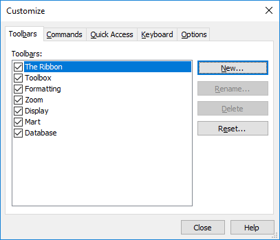
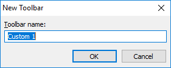

Create a Toolbar
You can create a new toolbar in the erwin Data Modeler workplace, and populate it with the icons most relevant to your work.
To create a toolbar
- Do one of the following:
- On the Quick Access Toolbar, click the Customize Quick Access Toolbar arrow and click More Commands.
- On any toolbar, click the Toolbar Options arrow and click Customize.
The Customize dialog box is displayed.

- On the Toolbars tab, click New.
The New Toolbar dialog box opens.

- Enter a name of the new toolbar and click OK. This text displays in the title bar of the new toolbar, when you select to undock the toolbar in the erwin Data Modeler workplace.
The new toolbar is added to the list of toolbars on the Customize dialog box.
- Select the new toolbar and click the Commands tab.
- Select a category from the Categories list. The list of commands available under the selected category is displayed in the Commands list.
- Drag and drop commands onto the toolbar, one at a time.
A toolbar with selected commands is created.
Another approach to using this functionality is to customize an existing toolbar. For example, remove the icons for the functionality that you do not use frequently. You can also hide a toolbar using the option on the View, Toolbars menu.
More Information
Customize a Toolbar